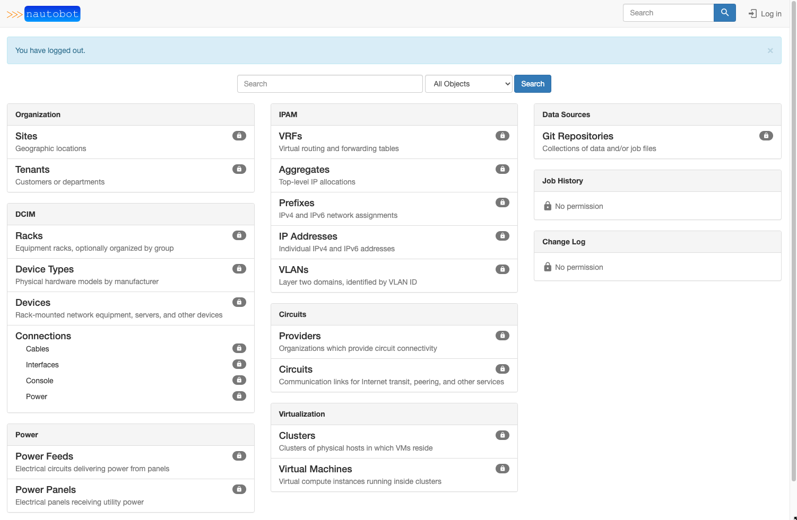
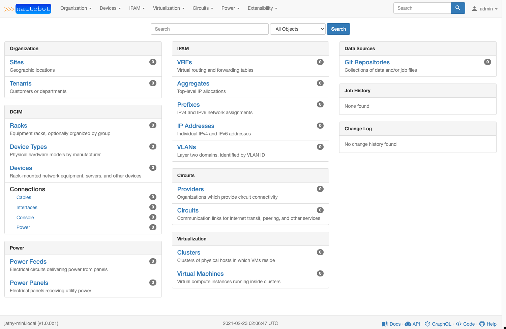

Installing Nautobot¶
This section of the documentation discusses installing and configuring the Nautobot application itself.
These instructions will guide you through the following actions:
- Establish a Nautobot root directory for the application environment
- Create a
nautobotsystem account - Create a Python virtual environment (virtualenv)
- Install Nautobot and all required Python packages
- Run the database schema migrations
- Aggregate static resource files on disk
- Verify the installation using the development/test server
Important
Your database server and Redis must have been successfully installed before continuing with deployment steps. If you haven't done that yet, please visit the guide on Installing Nautobot Dependencies
Choose your NAUTOBOT_ROOT¶
You need to select a directory path where everything related to Nautobot will be installed. We will use this value across the documentation and it will be referred to as NAUTOBOT_ROOT.
We will be using this path as the home directory of the nautobot user.
Tip
We have selected /opt/nautobot, but you may use any directory you choose.
Later on, we will need to set this directory path as the NAUTOBOT_ROOT environment variable to tell Nautobot where to find its files and settings.
Create the Nautobot System User¶
Create a system user account named nautobot. This user will own all of the Nautobot files, and the Nautobot web services will be configured to run under this account.
The following command also creates the /opt/nautobot directory and sets it as the home directory for the user.
Setup the Virtual Environment¶
A Python virtual environment or virtualenv is like a container for a set of Python packages. A virtualenv allows you to build environments suited to specific projects without interfering with system packages or other projects.
When installed per the documentation, Nautobot uses a virtual environment in production.
In the following steps, we will have you create the virtualenv within the NAUTOBOT_ROOT you chose in the previous step. This is the same we had you set as the home directory as the nautobot user.
Note
Instead of deliberately requiring you to activate/deactivate the virtualenv, we are emphasizing on relying on the $PATH to access programs installed within it. We find this to be much more intuitive and natural when working with Nautobot in this way.
Create the Virtual Environment¶
As root, we're going to create the virtualenv in our NAUTOBOT_ROOT as the nautobot user to populate the /opt/nautobot directory with a self-contained Python environment including a bin directory for scripts and a lib directory for Python libraries.
Update the Nautobot .bashrc¶
So what about the NAUTOBOT_ROOT? We've referenced this environment variable several times. Here is where it finally gets set.
We need to set the NAUTOBOT_ROOT environment variable for the nautobot user and make sure that it always set without having to do it manually.
Run this command to update ~/.bashrc for nautobot so that anytime you become nautobot, your NAUTOBOT_ROOT will be set automatically.
Sudo to nautobot¶
It is critical to install Nautobot as the nautobot user so that we don't have to worry about fixing permissions later.
Observe also that you can now echo the value of the NAUTOBOT_ROOT environment variable that is automatically set because we added to .bashrc:
Warning
Unless explicitly stated, all remaining steps requiring the use of pip3 or nautobot-server in this document should be performed as the nautobot user!
Understanding the Virtual Environment¶
Because the nautobot user was created with NAUTOBOT_ROOT set as its home directory and we had you set the shell to /bin/bash, the binary path $NAUTOBOT_ROOT/bin is automatically added to the beginning of the $PATH environment variable:
In Ubuntu 20.04:
$ echo $PATH
/opt/nautobot/bin:/usr/local/sbin:/usr/local/bin:/usr/sbin:/usr/bin:/sbin:/bin:/snap/bin
Due to differences between OS, in CentOS $PATH will appear as:
$ echo $PATH
/opt/nautobot/.local/bin:/opt/nautobot/bin:/opt/nautobot/.local/bin:/opt/nautobot/bin:/sbin:/bin:/usr/sbin:/usr/bin:/usr/local/sbin
Therefore, any commands executed by the nautobot user will always check $NAUTOBOT_ROOT/bin first.
Since NAUTOBOT_ROOT also contains the Python virtualenv for Nautobot, all of the commands you will execute as the nautobot user, will automatically prefer the virtualenv's commands because they come first in the $PATH.
As the nautobot user, you may use which pip3 to confirm that you are using the correct version of pip3. The path should match that of $NAUTOBOT_ROOT/bin. For example:
This makes sure that the version of Python you're using, as well any dependencies that you install, remain isolated in this environment.
Prepare the Virtual Environment¶
Before we install anything into the virtualenv, we want to make sure that Pip is running the latest version.
Pip is Python's package installer and is referred interchangeably as pip or pip3. For the purpose of this document, we'll deliberately be referring to it as pip3. Many common issues can be solved by running the latest version of Pip. Before continuing with installing Nautobot, upgrade Pip to its latest release.
We also want to deliberately install the wheel library which will tell Pip to always try to install wheel packages if they are available. A wheel is a pre-compiled Python package, which is quicker and safer to install because it does not require development libraries or gcc to be installed on your system just so that some more advanced Python libraries can be compiled.
Install Nautobot¶
Use Pip to install Nautobot:
Hint
If you are using MySQL as your database backend, use pip3 install "nautobot[mysql]" to install Nautobot and the mysqlclient library together!
Install MySQL client library¶
If you are using MySQL as your database server you must install the mysqlclient database client for Python.
Warning
If you're using a MySQL database, Nautobot will not work without this client library. You cannot skip this step.
Great! We have NAUTOBOT_ROOT ready for use by the nautobot user, so let's proceed to verifying the installation.
Verify your Nautobot Installation¶
You should now have a fancy nautobot-server command in your environment. This will be your gateway to all things Nautobot! Run it to confirm the installed version of nautobot:
Configuration¶
Before you can use Nautobot, you'll need to configure it by telling it where your database and Redis servers can be found, among other things. This is done with the nautobot_config.py configuration file.
Initialize your configuration¶
Initialize a new configuration by running nautobot-server init. You may specify an alternate location and detailed instructions for this are covered in the documentation on Nautobot Configuration.
However, because we've set the NAUTOBOT_ROOT, this command will automatically create a new nautobot_config.py at the default location based on this at $NAUTOBOT_ROOT/nautobot_config.py:
Required Settings¶
Your nautobot_config.py provides sane defaults for all of the configuration settings. You will inevitably need to update the settings for your environment, most notably the DATABASES setting. If you do not wish to modify the config, by default, many of these configuration settings can also be specified by environment variables. Please see Required Settings for further details.
Edit $NAUTOBOT_ROOT/nautobot_config.py, and head over to the documentation on Required Settings to tweak your required settings. At a minimum, you'll need to update the following settings:
ALLOWED_HOSTS: You must set this value. This can be set to["*"]for a quick start, but this value is not suitable for production deployment.DATABASES: Database connection parameters. If you installed your database server on the same system as Nautobot, you'll need to update theUSERandPASSWORDfields here. If you are using MySQL, you'll also need to update theENGINEfield, changing the default database driver suffix fromdjango.db.backends.postgresqltodjango.db.backends.mysql.- Redis settings: Redis configuration requires multiple settings including
CACHEOPS_REDISandRQ_QUEUES, if different from the defaults. If you installed Redis on the same system as Nautobot, you do not need to change these settings.
Important
You absolutely must update your required settings in your nautobot_config.py or Nautobot will not work.
Warning
If you are using MySQL as your database backend, you must also update the database ENGINE setting to django.db.backends.mysql.
Save your changes to your nautobot_config.py and then proceed to the next step.
MySQL Unicode Settings¶
If you are using MySQL as your database backend, and you want to enable support for Unicode emojis, please make sure to add "OPTIONS": {"charset": "utf8mb4"} to your DATABASES setting. Please see the configuration guide on MySQL Unicode settings for more information.
Optional Settings¶
All Python packages required by Nautobot will be installed automatically when running pip3 install nautobot.
Nautobot also supports the ability to install optional Python packages. If desired, these packages should be listed in local_requirements.txt within the NAUTOBOT_ROOT directory, such as /opt/nautobot/local_requirements.txt.
If you decide to use any Nautobot plugins, they should be listed in this file.
We will cover two examples of common optional settings below.
Configuring NAPALM¶
Nautobot provides built-in support for the NAPALM automation library, which allows Nautobot to fetch live data from devices and return it to a requester via its REST API. The NAPALM_USERNAME and NAPALM_PASSWORD configuration parameters define the credentials to be used when connecting to a device.
To use NAPALM, add nautobot[napalm] to your local_requirements.txt so that it can be installed and kept up to date:
Remote File Storage¶
By default, Nautobot will use the local filesystem to store uploaded files. To use a remote filesystem, install the django-storages library and configure your desired storage backend in nautobot_config.py.
To use remote file storage, add nautobot[remote_storage] to your local_requirements.txt so that it can be installed and kept up to date:
Prepare the Database¶
Before Nautobot can run, the database migrations must be performed to prepare the database for use. This will populate the database tables and relationships:
Create a Superuser¶
Nautobot does not come with any predefined user accounts. You'll need to create a administrative superuser account to be able to log into Nautobot for the first time. Specifying an email address for the user is not required, but be sure to use a very strong password.
Create Static Directories¶
Nautobot relies upon many static files including:
git- For storing Git repositoriesjobs- For storing custom Jobsmedia- For storing uploaded images and attachments (such as device type images)static- The home for CSS, JavaScript, and images used to serve the web interface
Each of these have their own corresponding setting that defined in nautobot_config.py, but by default they will all be placed in NAUTOBOT_ROOT unless you tell Nautobot otherwise by customizing their unique variable.
The collectstatic command will create these directories if they do not exist, and in the case of the static files directory, it will also copy the appropriate files:
Install Local Requirements¶
Note
If you did not create a local_requirements.txt above, please skip this step.
This step is entirely optional. As indicated above, we mentioned that any extra local requirements should go into $NAUTOBOT_ROOT/local_requirements.txt.
Check your Configuration¶
Nautobot leverages Django's built-in system check framework to validate the configuration to detect common problems and to provide hints for how to fix them.
Checks are ran automatically when running a development server using nautobot-server runserver, but not when running in production using WSGI.
Hint
Get into the habit of running checks before deployments!
Test the Application¶
At this point, we should be able to run Nautobot's development server for testing. We can check by starting a development instance:
Next, connect to the name or IP of the server (as defined in ALLOWED_HOSTS) on port 8080; for example, http://127.0.0.1:8080/. You should be greeted with the Nautobot home page.
Danger
DO NOT USE THIS SERVER IN A PRODUCTION SETTING. The development server is for development and testing purposes only. It is neither performant nor secure enough for production use.
Warning
If the test service does not run, or you cannot reach the Nautobot home page, something has gone wrong. Do not proceed with the rest of this guide until the installation has been corrected. Some platforms (such as CentOS) have a firewall enabled by default. If you are unable to connect to the server url on port 8080, verify the firewall policy to allow the appropriate connections, or select an already permitted port.
Important
Certain Nautobot features (Git repository synchronization, webhooks, jobs, etc.) depend on the presence of Nautobot's background Celery worker process, which is not automatically started by the runserver command. To start it for testing purposes, you can run nautobot-server celery worker (for background tasks) or nautobot-server rqworker (for jobs) separately. For production use, Nautobot and the worker processes should be managed by systemd rather than started manually, as described in the next section of this documentation.
Note that the initial user interface will be locked down for non-authenticated users.

Try logging in using the superuser account we just created. Once authenticated, you'll be able to access all areas of the UI:

Type Ctrl-C to stop the development server. Now you're ready to proceed to starting Nautobot as a system service.